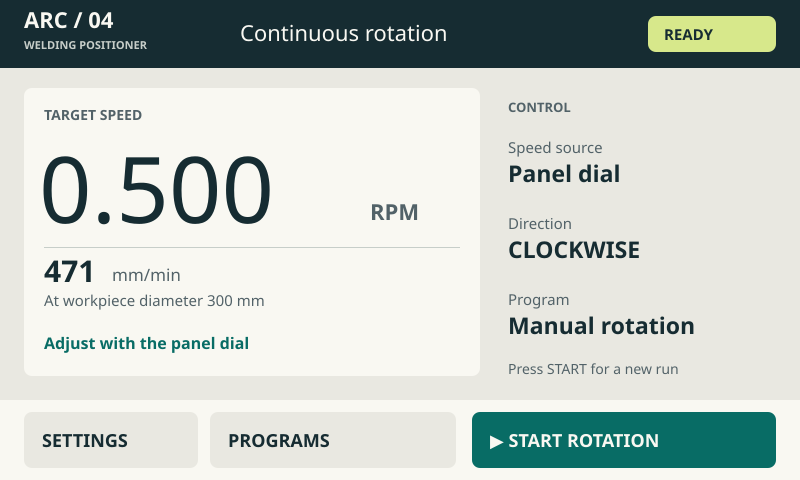
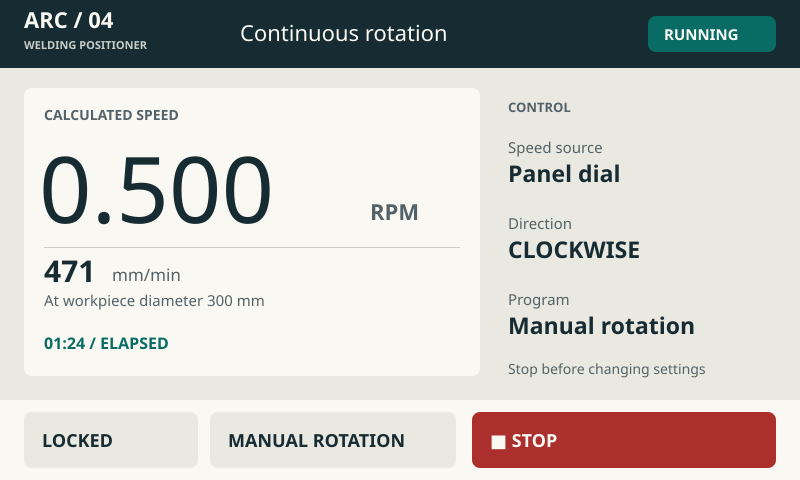
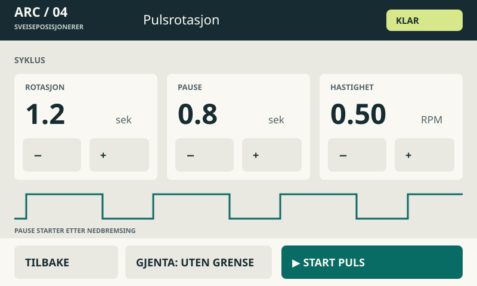
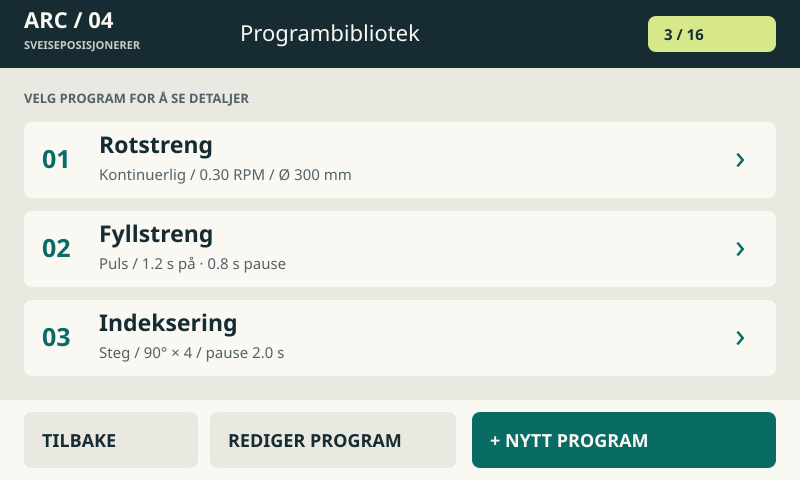
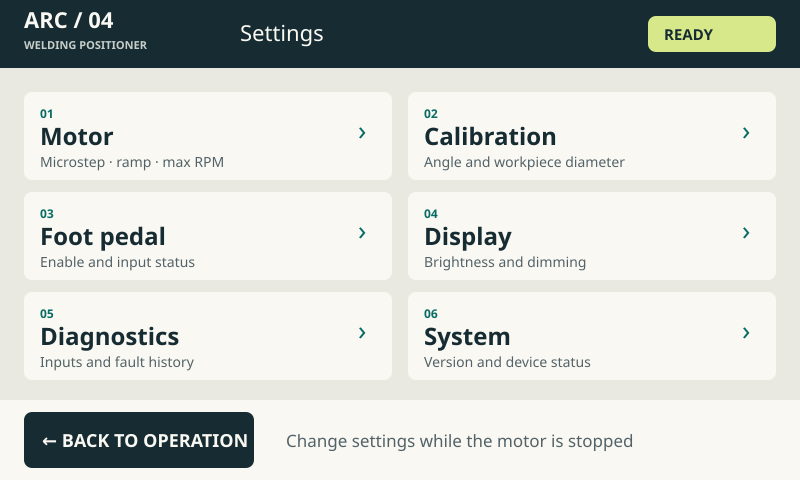
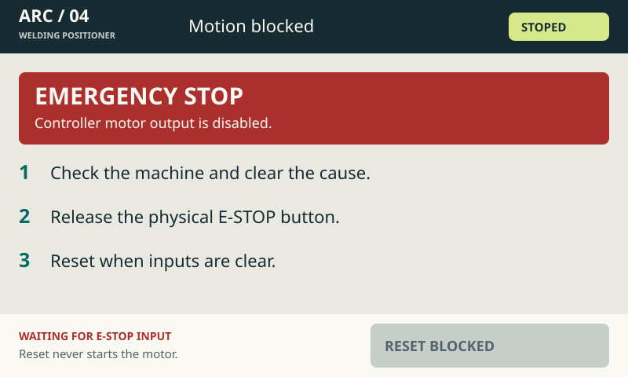

Et lyst instrumentpanel med mørk topp, petroleumsgrønne handlinger og store tall. Grafikken er rolig under drift. Rødt brukes til stopp og feil. Norske tekster er en del av forslaget.
Alle data er eksempler. STOPP har fast plass i aktive kjørebilder; låste kontroller skal være utilgjengelige. Dette er seks konseptskjermer. Ingen firmware er endret.

Stor verdi, eksplisitt hastighetskilde og fast plass til START/STOPP. Beregnet hastighet er ikke encoderfeedback.

Stor verdi, eksplisitt hastighetskilde og fast plass til START/STOPP. Beregnet hastighet er ikke encoderfeedback.

Store pluss/minus-flater og en konkret tidslinje. Pause regnes etter nedbremsing.

Lesbare rader med nøkkelverdier. Programvalg åpner gjennomgang før start.

Seks tydelige områder og fast retur til drift.

Tekst og handlingstrinn forklarer feilen. Kvittering er sperret mens inngangen er aktiv.